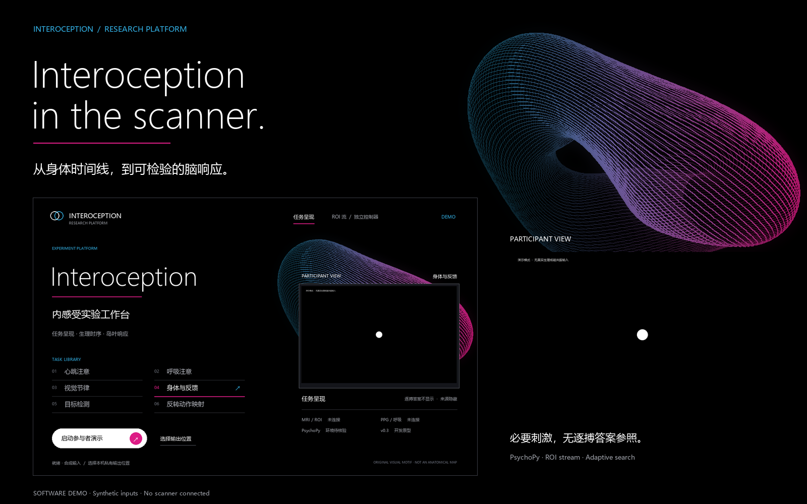
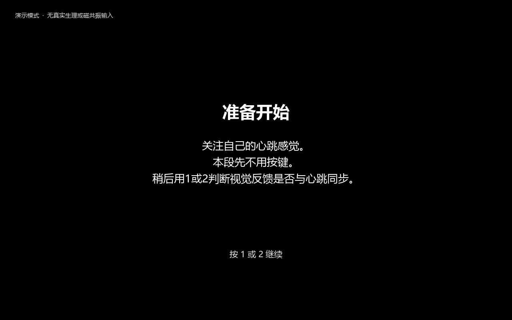
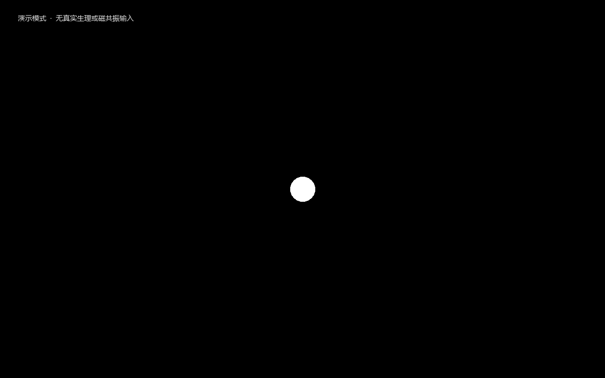
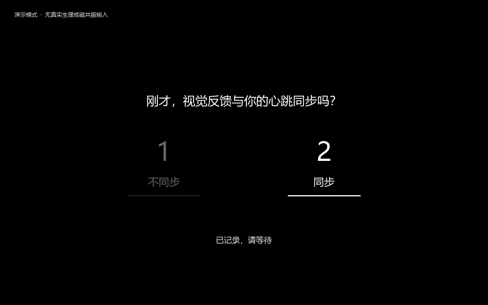
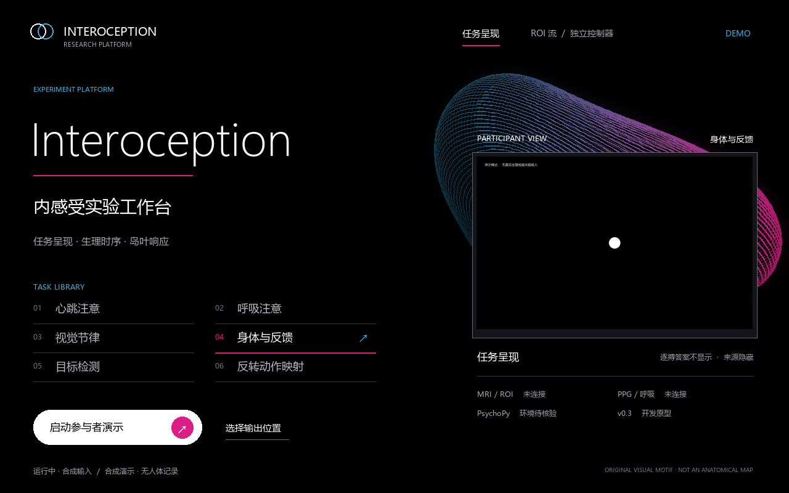

内感受实验工作台 · 程序演示

THE WALKTHROUGH / 20 SECONDS
From cue
to response.
同一套程序，从准备、等待触发，到观察与评分。参与者的画面，和操作者的工作台，各自承担清楚的任务。
THE SCREENS / SAME RENDERER
Closer.
完整尺寸的实际程序画面。测量阶段保持中性背景，只呈现协议需要的内容。
准备。
明确注意目标，再进入任务。

观察。
必要的实验线索，不叠加逐搏答案参照。

判断。
实际状态机驱动的量尺；此处的按键由脚本模拟。

控制。
操作者工作台，呈现参与者之外的任务与接口状态。
